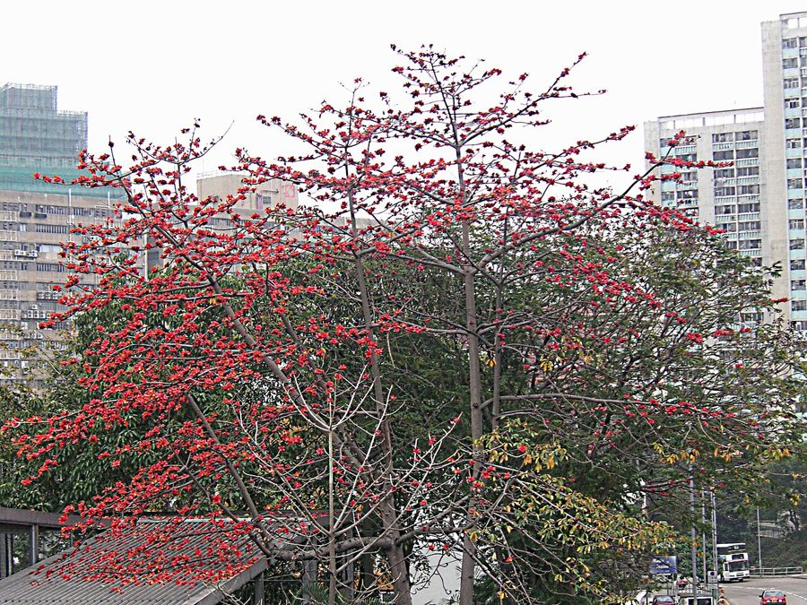

सेमलSemal
Bombax ceiba · Malvaceae · FLR-0035

- Scientific name
- Bombax ceiba L.
- Family
- Malvaceae
- Hindi
- सेमल
- Status here
- native
- IUCN
- LC
When to look कब देखें
Present all year.
सेमल / Semal
Bombax ceiba L. — Malvaceae
सेमल — हमारे मैदानी इलाकों का एक विशाल, भव्य और तेजी से बढ़ने वाला पर्णपाती वृक्ष है जो सर्दियों के अंत में पूरी तरह से पत्ती रहित होने के बाद बड़े, मांसल, चमकीले सिंदूरी-लाल फूलों से ढक जाता है। यह वृक्ष 30 से 40 मीटर तक ऊंचा हो सकता है और इसके तने पर कांटेदार नुकीले उभार (buttressed prickly trunk) होते हैं। वसंत ऋतु में इसके बड़े लाल फूल मधुमक्खियों, चमगादड़ों, तोतों और गिलहरियों जैसे सैकड़ों वन्यजीवों के लिए अमृत (nectar) का एक अत्यंत महत्वपूर्ण स्रोत बनते हैं। ग्रीष्म ऋतु में इसके फलों (capsules) के फटने से निकलने वाली रेशमी कपास (silky cotton) ग्रामीण क्षेत्रों में तकिए और गद्दे भरने के काम आती है।
Quick Identification त्वरित पहचान
| Feature | Description |
|---|---|
| Size & Shape | Tall, majestic tree (30–40 m tall) with straight, cylindrical trunk and branches arranged in horizontal whorls |
| Bark & Trunk | Pale grey bark; trunk covered with hard, conical prickles, becoming buttressed at the base in old specimens |
| Leaves | Large, palmately compound leaves with 5–7 lanceolate leaflets spreading out like fingers |
| Flowers | Large, fleshy, cup-shaped, brilliant scarlet-red or crimson flowers, appearing when the tree is leafless |
| Fruit & Seeds | Woody, egg-shaped capsules (10–15 cm long) filled with soft white silky cotton (kapok) wrapping black seeds |
Field tip: In late winter (January–March), look for a tall, leafless tree with branches arranged in distinctive tiered horizontal layers, covered entirely in large, fleshy red flowers. The prickly, grey trunk is immediately diagnostic even when the tree is young.
Morphology आकारिकी
Biometrics (typical measurements in the Gangetic plain):
| Feature | Measurement |
|---|---|
| Tree height | 30–40 m |
| Leaf length | 15–25 cm |
| Leaf width | 5–8 cm (per leaflet) |
| Flower diameter | 10–15 cm |
| Fruit dimensions | 10–15 cm long, 3–5 cm wide |
Habit: Large deciduous tree, up to 30–40 m tall. The branches emerge in whorls of 5–7 from the main trunk, spreading horizontally in tiers, giving the tree a pagoda-like shape.
Bark & Trunk: The bark is pale grey, smooth in young branches, but the main trunk is covered with thick, conical prickles that prevent climbing animals from raiding nests. In older specimens, the trunk develops massive buttresses at the base.
Leaves: Alternate, palmately compound. Petiole is 15–20 cm long. Each leaf has 5–7 lanceolate leaflets, 10–20 cm long and 5–8 cm wide, with pointed tips and smooth margins.
Flowers: Fleshy, large, 10–15 cm across. The petals are bright red, fleshy, and recurved. The calyx is cup-shaped and thick. Stamens are numerous and arranged in bundles, surrounding the central ovary.
Fruit & Seeds: The fruit is a large, hard, woody capsule, 10–15 cm long, ripening in April–May. It splits open into 5 valves, releasing masses of fine, silky white cotton (kapok) which are carried by the wind along with the small, black, oily seeds.
Ecological Role पारिस्थितिक भूमिका
Critical nectar source. Flowering when most other forest and farm trees are dry and flowerless, Semal is a keystone nectar source.
- Wildlife refuge: A single flowering Semal tree attracts a chaotic gathering of birds, including parakeets, mynas, bulbuls, sunbirds, crows, and tree pies, as well as fruit bats at night. They feed on the abundant nectar, acting as primary pollinators.
- Nesting sites: Due to its immense height and tiered branching, large birds of prey like the Black Kite and vultures select Semal trees for nesting.
- Prickly defense: The prickly bark provides natural protection for nesting birds against climbing predators like monitor lizards.
Life Cycle / Phenology जीवन चक्र
- Germination: Seedlings emerge during the monsoon from wind-dispersed seeds.
- Growth: Rapid growth rate, establishing a thick trunk within 10–15 years.
- Leaf shedding: Leaves are shed in December–January, leaving the tree bare.
- Flowering: January to March, when the bare branches are covered in red blooms.
- Fruiting: Woody pods mature in April–May, bursting open in late May to release silky cotton.
Host Plants or Prey आहार
Prey / Beneficiaries:
- Insects: Pollinated by honeybees (Apis cerana and Apis dorsata) and various butterfly species.
- Birds: Nectar is consumed by Rose-ringed Parakeet, mynas, and bulbuls.
- Mammals: Fruit bats feed on the nectar at night.
Predators / Natural Enemies शत्रु
- Larvae: Boring beetles attack the soft wood of older or dying trees.
- Fungi: Root rot and wood-decaying fungi in waterlogged soils.
- Mammals: Monkeys destroy developing flower buds to eat the fleshy bases.
Agricultural / Human Relevance कृषि और मानव संबंध
Traditional and Ethnobotanical Use
Semal is highly valued in the rural economy of eastern Uttar Pradesh:
- Specific medicinal preparations:
- Diarrhoea & Dysentery: The dry resin/gum of the tree (known locally as Mocharas) is mixed with water or curd and taken as an effective astringent to control dysentery.
- Skin infections & Acne: A paste made of the fresh prickly bark is applied topically on the face to treat acne and skin inflammation.
- Rejuvenating tonic: The dried roots of young Semal plants (known as Semal Musli) are ground into powder and taken with milk as a restorative tonic to treat weakness.
- Religious or cultural significance in eastern UP: Semal wood is traditionally selected to form the central pole (Holika khamba) for the Holika Dahan bonfire during the Holi festival. In local folklore, the tree is associated with strength and protection.
- Traditional ecological or seasonal knowledge: The bursting of the woody pods and the scattering of the white cotton in May is used by farmers as a traditional phenological marker indicating the arrival of hot summer winds (Loo).
Expected Locally स्थानीय रूप से अपेक्षित
Not a field record. Written from published accounts for eastern Uttar Pradesh. No confirmed local sighting yet — if you have seen it, that is what the atlas needs.
अभी तक स्थानीय पुष्टि नहीं। यह विवरण प्रकाशित स्रोतों से है, किसी अवलोकन से नहीं।
A common sight along rural roadsides, village commons (user lands), and field margins in the Basti district. Large, mature trees with heavily buttressed trunks are often found near old village wells. The bursting of Semal pods in late summer creates a brief snow-like spectacle as white cotton flakes drift across the fields, collected by local children to stuff home-made cushions.
Distribution वितरण
Global range: Native to tropical and subtropical regions of South Asia, Southeast Asia, and southern China.
In India: Widespread in plains, deciduous forests, and river valleys up to 1,500 m.
In Uttar Pradesh: Abundant resident tree in all plains districts, especially along canals and dry woodlands.
In Basti district / eastern UP: Highly common in agricultural boundaries and village pastures.
Research Questions शोध प्रश्न
Anyone can investigate these | कोई भी इन प्रश्नों की जाँच कर सकता है
- How many bird species visit a single flowering Semal tree in your village over a two-hour period? / फूल आने के दौरान दो घंटे में एक सेमल के पेड़ पर कितनी पक्षी प्रजातियाँ आती हैं? — Monitor a tree at dawn during February.
- Does the density of prickles on the trunk decrease as the tree gets older? — Measure and compare prickle density on young saplings vs. mature trees.
- What is the survival rate of Semal seedlings in grazed pastures vs. protected areas? — Survey regeneration patterns in village commons.
- How long does it take for a Semal pod to fully release its seeds once it begins splitting? / सेमल की फली के फटने से लेकर बीज पूरी तरह मुक्त होने में कितना समय लगता है? — Record daily observations of ripening pods.
- How does the timing of Semal leaf fall correlate with local winter temperatures? — Document leaf-drop dates across different microclimates.
Similar Species मिलती-जुलती प्रजातियाँ
| Species | How to tell apart | हिंदी |
|---|---|---|
| White Silk Cotton Tree (Ceiba pentandra) | Flowers are white or pale pink; trunk has less prominent prickles; introduced species | सफेद सेमल — सफेद फूल |
| Kapok Tree (Bombax insigne) | Flowers are larger and more orange-yellow; prickles absent or very small; found in dry rocky forests | पहाड़ी सेमल — नारंगी फूल |
| native Babool (Vachellia nilotica) | Small bipinnate leaves; bright yellow flower balls; long white spines; smaller stature | बबूल — छोटे पत्ते और पीले फूल |
Field rule: Large tree with tiered horizontal branches, grey trunk covered with conical prickles, palmately compound leaves, and massive fleshy red flowers in late winter identify the Semal tree.
Taxonomy & Classification वर्गीकरण
Original description. Carl Linnaeus described the Semal tree as Bombax ceiba in 1753 in his seminal work Species Plantarum (Vol. 1, p. 511). The type locality was India. The genus name Bombax is derived from the Greek bombyx, meaning silk or cotton, and ceiba is a Taino name used for silk-cotton trees.
Subspecies. Monotypic in the region.
Family and order placement. Placed in the order Malvales, family Malvaceae (mallow family), subfamily Bombacoideae.
Phylogenetic notes. Bombax ceiba is closely related to the African baobab (Adansonia digitata), sharing similar floral biology adapted for pollination by bats and birds.
IUCN status rationale. Evaluated as Least Concern (LC). Widespread and abundant across its range, with no major threats, though mature trees are sometimes logged for soft wood.
Photo Gallery फोटो गैलरी
References संदर्भ
- Linnaeus, C. (1753). Species Plantarum. Laurentius Salvius, Holmiae, p. 511. [original description]
- Brandis, D. (1906). Indian Trees: An Account of Trees, Shrubs, Woody Climbers, Bamboos and Palms Indigenous or Cultivated in the British Indian Empire. Archibald Constable & Co., London.
- Sahni, K.C. (1998). The Book of Indian Trees. Oxford University Press, New Delhi.
- Subramanian, K. et al. (1994). Reproductive biology of Bombax ceiba. Journal of Tropical Forest Science, 6(3), 285-294.
- IUCN Red List (2024). Bombax ceiba. Ver. 2024.
- GBIF Occurrence Data — Bombax ceiba, Uttar Pradesh (2010–2025).
Source file: species/flora/trees/semal.md